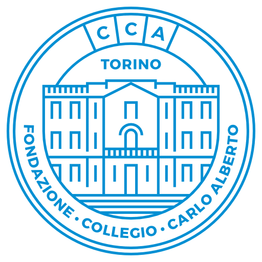
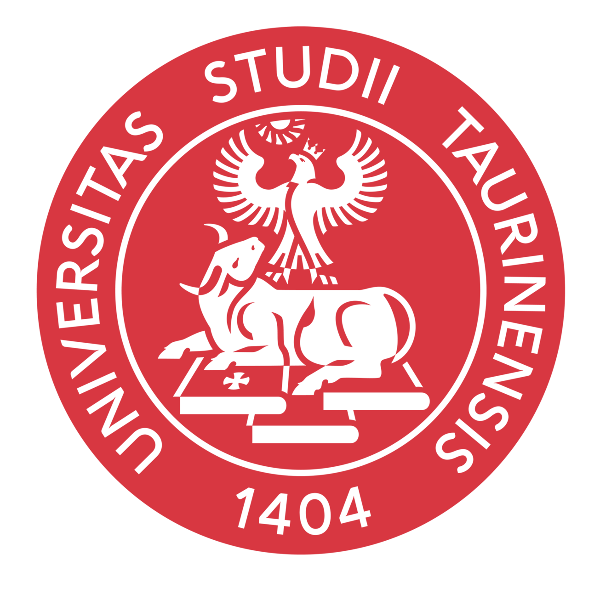
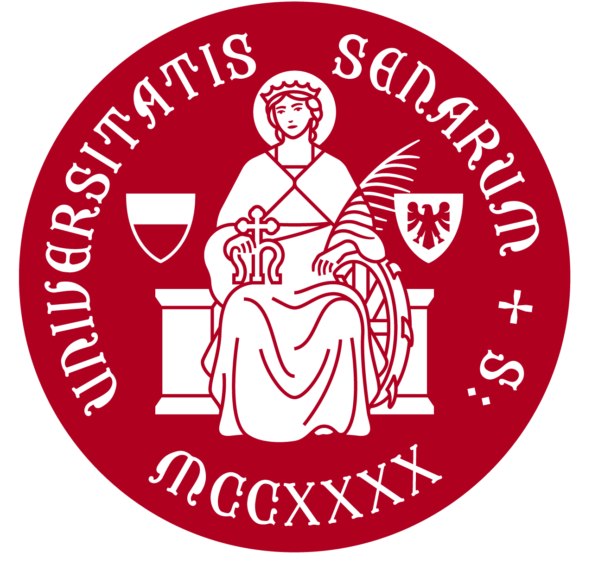

Incoming PhD student in Economics
Gianluca Romeo
I am an incoming PhD student at the University of Padua. My current interests span international economics and macroeconomics, with a focus on empirically grounded questions.
Previously, I worked as a research assistant at the University of Turin and the University of the Balearic Islands, contributing to applied microeconomics projects.
Education
Academic background
- 2026—2030
Incoming PhD in Economics
University of Padua · From November 2026

- 2025—2026
MA in Economics and Data Analytics
Collegio Carlo Alberto · University of Turin


- 2022—2024
MSc in International Economics and Management
University of Turin
- 2019—2022
BSc in Economics and Commerce
University of Siena
